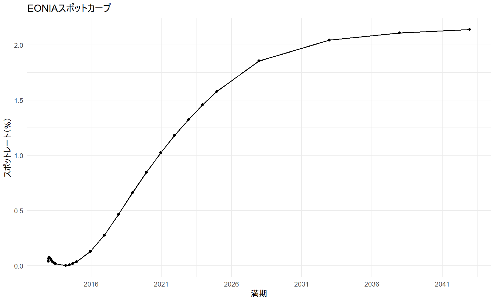
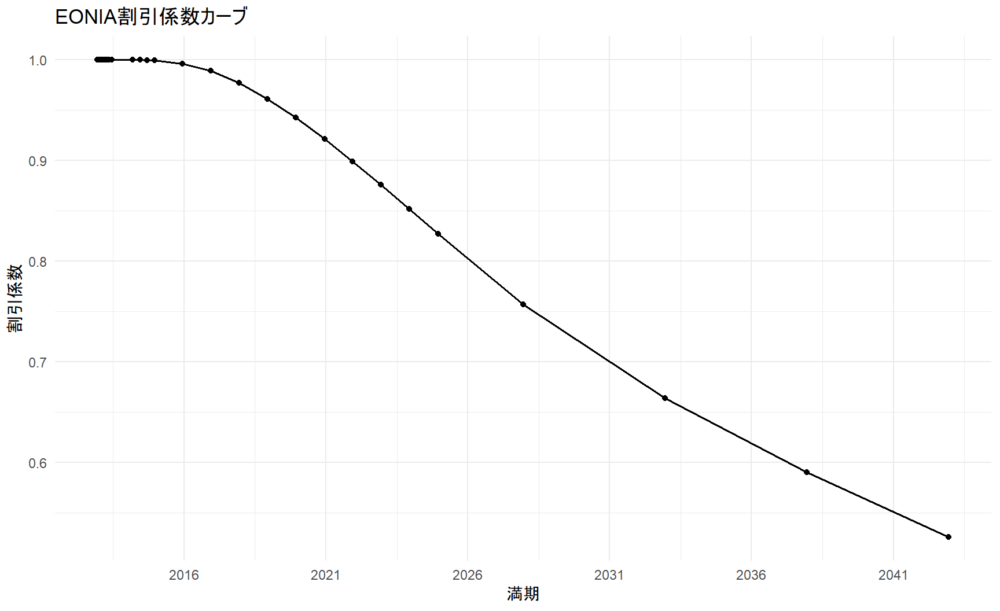
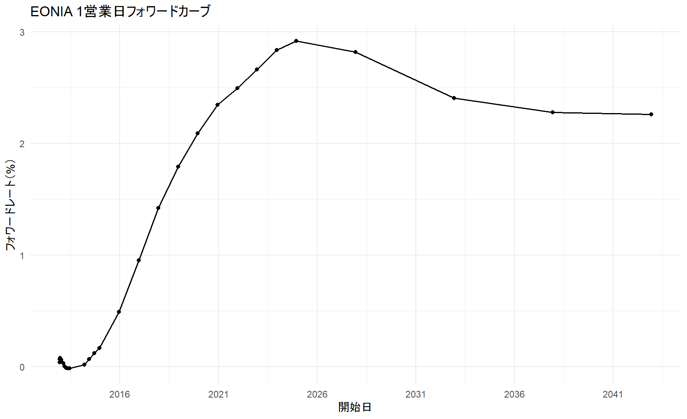

knitr::opts_chunk$set(
collapse = TRUE,
comment = "#>",
warning = FALSE,
message = FALSE
)
suppressPackageStartupMessages({
library(tidyverse)
library(ggthemes)
library(QuantLib)
library(GaussQuant)
library(tidyverse)
library(broom)
})第II-1章 確定キャッシュフロー債券評価
確定キャッシュフロー 固定利付債の価格、利回りおよび金利リスク
9 第II-1章 確定キャッシュフロー債券評価
金融では、異なる時点に発生する金額をそのまま比較することはできない。今日受け取る100円と1年後に受け取る100円では、運用可能期間や金利が異なるため、経済的な価値も異なるからである。そこで、時点の異なるキャッシュフローを評価する場合には、将来の金額を現在価値へ割り引くか、現在の金額を将来価値へ換算し、同一時点の価値にそろえる必要がある。金融商品の価格評価では、通常、将来のすべてのキャッシュフローを評価時点の現在価値へ換算する。
しかし、市場で直接観測される金利は、必ずしも各満期に対応するスポットレートではない。市場では、預金金利、OISレート、スワップレート、国債の価格や複利利回りなどが観測される。これらの市場情報と、日数計算規則、利払頻度および受渡日などのマーケットコンベンションを用いて、各満期のゼロクーポン・スポットレートとディスカウントファクター（以下、DF）を順次求める。この手続きをブートストラップという。
スポットレートは、評価時点から特定の満期までのゼロクーポン金利を表す。DFは、将来の1単位の金額を評価時点の価値へ換算する倍率であり、債券、スワップおよびデリバティブのキャッシュフロー評価に直接用いられる。さらに、異なる満期のDFを比較することで、将来の一定期間に適用されるフォワードレートを求めることができる。このように、市場で観測される複数の金利商品からスポットレート、DFおよびフォワードレートからなる金利期間構造を構築することは、金融工学における価格評価の基礎となる。
以下では、EONIAの市場データから構築した金利曲線を用いて、スポットカーブ、DFカーブおよびフォワードカーブの関係を確認する。さらに、本章では、固定利付債を例として、クリーン価格、ダーティ価格、経過利子、最終利回り、デュレーションおよびコンベクシティを計算する。あわせて、日数計算規則、休日カレンダー、営業日調整、受渡日および利払スケジュールといったマーケットコンベンションを確認する。
9.1 金利期間構造の確認
債券価格は、将来の各キャッシュフローを支払時点に対応する割引係数で現在価値へ換算し、その合計として求める。個別債券の評価に入る前に、金利期間構造をスポットレート、割引係数およびフォワードレートの三つの側面から確認する。
eonia_benchmark <- GaussQuant::eonia_curve_benchmark_GQL()
eonia_curve_tbl <- eonia_benchmark$final_validation$quote_repricing |>
dplyr::select(
pillar_date,
discount_factor,
zero_rate,
one_day_forward_rate
) |>
dplyr::filter(!is.na(.data$pillar_date)) |>
dplyr::distinct(.data$pillar_date, .keep_all = TRUE) |>
dplyr::arrange(.data$pillar_date)
spot_curve_plot <- eonia_curve_tbl |>
dplyr::filter(!is.na(.data$zero_rate)) |>
ggplot2::ggplot(
ggplot2::aes(
x = .data$pillar_date,
y = 100 * .data$zero_rate
)
) +
ggplot2::geom_line(linewidth = 0.7) +
ggplot2::geom_point(size = 1.5) +
ggplot2::scale_x_date(
date_breaks = "5 years",
date_labels = "%Y"
) +
ggplot2::labs(
title = "EONIAスポットカーブ",
x = "満期",
y = "スポットレート（%）"
) +
ggplot2::theme_minimal()
discount_curve_plot <- eonia_curve_tbl |>
dplyr::filter(!is.na(.data$discount_factor)) |>
ggplot2::ggplot(
ggplot2::aes(
x = .data$pillar_date,
y = .data$discount_factor
)
) +
ggplot2::geom_line(linewidth = 0.7) +
ggplot2::geom_point(size = 1.5) +
ggplot2::scale_x_date(
date_breaks = "5 years",
date_labels = "%Y"
) +
ggplot2::labs(
title = "EONIA割引係数カーブ",
x = "満期",
y = "割引係数"
) +
ggplot2::theme_minimal()
forward_curve_plot <- eonia_curve_tbl |>
dplyr::filter(!is.na(.data$one_day_forward_rate)) |>
ggplot2::ggplot(
ggplot2::aes(
x = .data$pillar_date,
y = 100 * .data$one_day_forward_rate
)
) +
ggplot2::geom_line(linewidth = 0.7) +
ggplot2::geom_point(size = 1.5) +
ggplot2::scale_x_date(
date_breaks = "5 years",
date_labels = "%Y"
) +
ggplot2::labs(
title = "EONIA 1営業日フォワードカーブ",
x = "開始日",
y = "フォワードレート（%）"
) +
ggplot2::theme_minimal()
print(spot_curve_plot)
print(discount_curve_plot)
print(forward_curve_plot)
9.2 1. マーケットコンベンション
債券評価では、価格や利回りの計算方法だけでなく、日付、利払頻度、休日および端数処理に関する市場慣行を確認する必要がある。同じ債券であっても、採用する日数計算規則や利回り表示方式が異なれば、経過利子、残存年数および計算価格も異なる。
9.2.1 1.1 一般的な市場慣行
日数計算規則（Day Count Convention）は、二つの日付の間の期間を年数へ換算する規則である。主な方式は次のとおりである。
Actual/365 Fixed 二つの日付間の実日数を365で除する。
Actual/360 二つの日付間の実日数を360で除する。短期金融市場や金利商品で広く用いられる。
Actual/Actual ICMA 実日数を、利払期間の実日数と年間利払回数に基づいて年換算する。固定利付債で用いられる代表的な方式である。
Actual/Actual ISDA 対象期間を平年部分と閏年部分に分け、それぞれ365または366で除する。
30/360 Bond Basis 1か月を30日、1年を360日として計算し、月末の日付には所定の調整を行う。
30E/360 開始日または終了日が31日の場合に30日へ調整し、1か月を30日、1年を360日として計算する。
30/360方式は手計算を容易にするために考案された方式であり、半年、四半期および1か月をそれぞれ180日、90日および30日として扱える。一方、Actual方式では暦上の実日数を用いるため、同じ利率でも計算期間によって利息額が異なることがある。日数計算規則の違いは、経過利子だけでなく、割引期間や利回りにも影響する。 詳細はDay count conventionを参照されたい。 ただし、日数計算規則はすべての計算に同じものを用いればよいわけではない。Actual/Actual ICMAや30/360 Bond Basisは、規則的な利払期間を基準としてクーポン額や経過利子を求める用途に適している。一方、金利期間構造では、評価日から各将来日までの距離を一貫した時間軸へ変換する必要があるため、Actual/360またはActual/365 Fixedのような単純な規則を用いることが多い。
とくにActual/Actual ICMAは、基準となる利払期間（reference period）を必要とする。不規則な初回または最終利払期間では、同じ二つの日付であっても、基準期間の与え方によって年数が変わり得る。利払スケジュールを持たない金利カーブにこの規則をそのまま使用すると、割引期間や割引係数が不自然になる場合がある。したがって、債券のクーポン計算に用いる日数計算規則と、割引カーブの時間軸に用いる日数計算規則は区別して設定する必要がある。
受渡日や利払日が非営業日に当たる場合には、対象市場の休日カレンダーと営業日調整規則を用いる。代表的な規則には、次営業日へ移すFollowing、翌月へ越える場合には前営業日へ戻すModified Following、前営業日へ戻すPreceding、および日付を調整しないUnadjustedがある。
9.2.2 1.2 日本の債券市場における慣行
日本の公社債市場では、単価と複利利回りに加えて、単利利回りが広く用いられてきた。日本証券業協会の公社債店頭売買参考統計値でも、原則として報告された単利利回りから単価を求め、その単価から複利利回りを計算する手順が採用されている。
利付債の経過利子に用いる経過日数は、直前利払期日から受渡日までの実日数を片端入れで数える。一方、最終利回りに用いる残存日数は、受渡日の翌日から償還日までを片端入れで数えるため、経過日数と残存日数を区別する必要がある。
残存日数を \(N\)、残存年数を \(T\) とすると、残存年数は次式で求める。
\[ T=\frac{N}{365} \]
日本市場の実務では、残存期間が1年以上の場合には、原則として期間中の2月29日を残存日数から除外する。残存期間が1年未満の場合には2月29日を含めるが、分母は365のままとする。
さらに、計算された残存年数は小数点以下第8位で切り捨て、小数点以下第7位までの値を以後の計算に用いる。四捨五入ではなく切り捨てである点が重要である。
額面100円、年間クーポン額を \(C\)、償還価格を \(R\)、単価を \(P\)、残存年数を \(T\) とすると、単利の最終利回り \(Y\) は次式で表される。
\[ Y= \frac{ C+\dfrac{R-P}{T} }{ P } \times 100 \]
この単利利回りは、将来の各キャッシュフローを支払時点ごとに割り引く複利利回りとは異なる。クーポンと償還差損益を残存年数で年換算する日本市場独自の表示方法であり、キャッシュフローごとの時間価値を直接には反映しない。
利回りから単価を逆算する場合には、小数点以下第7位までに切り捨てた残存年数を使用する。算出された単価も、原則として小数点以下第4位を切り捨て、小数点以下第3位までとする。
単価で約定する取引では、計算途中の端数が約定価格を直接変更する場面は限られる。しかし、単利利回りから単価を逆算する場合には、残存年数の切り捨てが償還差損益の年換算額を変化させ、さらに単価の切り捨てによって価格差が生じる。このため、日本の債券計算では、残存日数、残存年数および単価の端数処理を正確に再現する必要がある。
なお、以下のコード例では一般的な債券評価の確認を目的として、30/360 Bond Basis、半年複利およびUnadjustedを採用している。したがって、この設定は日本国内債の単利利回り慣行をそのまま再現するものではない。
以下では、日本の休日カレンダー、取引日から2営業日後の受渡日、30/360 Bond Basis、半年複利および年2回払いを設定する。
jp_calendar <- QuantLib::Japan()
dc_a365 <- QuantLib::Actual365Fixed()
dc_a360 <- QuantLib::Actual360()
dc_30 <- GaussQuant::day_counter_GQL(
"Thirty360",
convention = "BondBasis"
)
cmpd_compounded <- QuantLib::Compounding_Compounded_get()
cmpd_simple <- QuantLib::Compounding_Simple_get()
freq_annual <- QuantLib::Frequency_Annual_get()
freq_semiannual <- QuantLib::Frequency_Semiannual_get()
trade_date_chr <- "2022-08-19"
issue_date_chr <- "2022-07-28"
maturity_date_chr <- "2025-07-28"
trade_date <- GaussQuant::date_GQL(trade_date_chr)
issue_date_ql <- GaussQuant::date_GQL(issue_date_chr)
maturity_date_ql <- GaussQuant::date_GQL(maturity_date_chr)
settlement_days <- 2L
GaussQuant::set_eval_date_GQL(trade_date)
settlement_date <- GaussQuant::advance_days_GQL(
calendar_obj = jp_calendar,
date_obj = trade_date,
n_days = settlement_days
)
settlement_date_chr <- as.character(settlement_date)
settlement_date_ql <- GaussQuant::date_GQL(settlement_date)
setup_tbl <- tibble::tibble(
item = c(
"trade_date",
"settlement_date",
"issue_date",
"maturity_date",
"settlement_days",
"day_counter",
"compounding",
"frequency"
),
value = c(
trade_date_chr,
settlement_date_chr,
issue_date_chr,
maturity_date_chr,
as.character(settlement_days),
"Thirty360(BondBasis)",
"Compounded",
"Semiannual"
)
)
GaussQuant::show_tbl_GQH(setup_tbl, "Bond setup dates and conventions")
#> # A tibble: 8 × 2
#> item value
#> <chr> <chr>
#> 1 trade_date 2022-08-19
#> 2 settlement_date 2022-08-23
#> 3 issue_date 2022-07-28
#> 4 maturity_date 2025-07-28
#> 5 settlement_days 2
#> 6 day_counter Thirty360(BondBasis)
#> 7 compounding Compounded
#> 8 frequency Semiannual表示された表から、取引日、受渡日、発行日、満期日および評価に用いる市場慣行を確認する。受渡日は日本の休日カレンダーを用いて取引日から2営業日後に計算される。
9.3 2. 固定利付債の設定
額面100、年率0.37%、半年払い、満期2025年7月28日の固定利付債を作成する。利払スケジュールは満期日から発行日へ向かって6か月ごとに生成し、各利払日はUnadjustedとする。
face_amount <- 100
coupon_rate <- 0.00370
clean_price_input <- 97.0
bond_obj <- GaussQuant::fixed_rate_bond_GQL(
issue_date = issue_date_chr,
maturity_date = maturity_date_chr,
face_amount = face_amount,
coupon_rate = coupon_rate,
settlement_days = settlement_days,
calendar = jp_calendar,
accrual_day_counter = dc_30,
payment_convention = "Unadjusted",
schedule_convention = "Unadjusted",
maturity_convention = "Unadjusted",
date_generation = "Backward",
end_of_month = FALSE,
schedule_frequency = GaussQuant::period_months_GQL(6)
)
bond_schedule <- QuantLib::Schedule(
issue_date_ql,
maturity_date_ql,
GaussQuant::period_months_GQL(6),
jp_calendar,
"Unadjusted",
"Unadjusted",
"Backward",
FALSE
)
schedule_tbl <- GaussQuant::schedule_dates_GQL(bond_schedule)
bond_setup_tbl <- tibble::tibble(
metric = c(
"bond_class",
"face_amount",
"coupon_rate",
"clean_price_input"
),
value = list(
paste(class(bond_obj), collapse = ", "),
face_amount,
coupon_rate,
clean_price_input
)
)
GaussQuant::show_tbl_GQH(GaussQuant::metric_tbl_display_GQH(bond_setup_tbl), "Fixed-rate bond object")
#> # A tibble: 4 × 2
#> metric value
#> <chr> <chr>
#> 1 bond_class _p_FixedRateBond
#> 2 face_amount 100.00000000
#> 3 coupon_rate 0.00370000
#> 4 clean_price_input 97.00000000
GaussQuant::show_tbl_GQH(schedule_tbl, "Bond schedule", n = 20)
#> # A tibble: 7 × 1
#> schedule_date
#> <date>
#> 1 2022-07-28
#> 2 2023-01-28
#> 3 2023-07-28
#> 4 2024-01-28
#> 5 2024-07-28
#> 6 2025-01-28
#> 7 2025-07-28債券オブジェクトの条件と、発行日から満期日までの利払日を確認する。
9.4 3. クリーン価格から最終利回り
市場で提示されるクリーン価格97から、将来キャッシュフローの現在価値がこの価格と一致する最終利回りを逆算する。
price_to_yield <- GaussQuant::bond_yield_from_clean_safe_GQL(
bond = bond_obj,
clean_price = clean_price_input,
day_counter = dc_30,
compounding = cmpd_compounded,
frequency = freq_semiannual
)
yield_tbl <- tibble::tibble(
metric = c(
"clean_price_input",
"yield_from_clean_price",
"yield_percent"
),
value = list(
clean_price_input,
price_to_yield,
100 * price_to_yield
)
)
GaussQuant::show_tbl_GQH(GaussQuant::metric_tbl_display_GQH(yield_tbl), "Clean price -> yield")
#> # A tibble: 3 × 2
#> metric value
#> <chr> <chr>
#> 1 clean_price_input 97.00000000
#> 2 yield_from_clean_price 0.01418724
#> 3 yield_percent 1.41872370債券価格が額面を下回っているため、算出される最終利回りはクーポンレートを上回る。
9.5 4. 最終利回りから価格
前節で求めた最終利回りを使って、クリーン価格、ダーティ価格および経過利子を計算する。両価格の関係は次式で表される。
\[ \text{Dirty Price}=\text{Clean Price}+\text{Accrued Interest} \]
price_tbl <- GaussQuant::bond_price_measures_GQL(
bond = bond_obj,
yield = price_to_yield,
day_counter = dc_30,
compounding = cmpd_compounded,
frequency = freq_semiannual,
settlement_date = settlement_date_chr
)
price_tbl <- GaussQuant::complete_accrual_metrics_GQL(
price_tbl = price_tbl,
bond_schedule = bond_schedule,
settlement_date = settlement_date,
day_counter = dc_30
)
price_tbl_display <- GaussQuant::metric_tbl_display_GQH(price_tbl)
GaussQuant::show_tbl_GQH(price_tbl_display, "Yield -> price summary")
#> # A tibble: 6 × 2
#> metric value
#> <chr> <chr>
#> 1 settlement_date 2022-08-23
#> 2 previous_coupon_date 2022-07-28
#> 3 accrued_days 25.00000000
#> 4 accrued_amount 0.02569444
#> 5 clean_price 97.00000012
#> 6 dirty_price 97.02569456
dirty_price_from_yield <- GaussQuant::get_metric_num_GQH(price_tbl, "dirty_price")
clean_price_from_yield <- GaussQuant::get_metric_num_GQH(price_tbl, "clean_price")
accrued_amount <- GaussQuant::get_metric_num_GQH(price_tbl, "accrued_amount")
cat(
"clean price:",
sprintf("%.8f", clean_price_from_yield),
"\n",
"dirty price:",
sprintf("%.8f", dirty_price_from_yield),
"\n",
"accrued:",
sprintf("%.8f", accrued_amount),
"\n"
)
#> clean price: 97.00000012
#> dirty price: 97.02569456
#> accrued: 0.02569444再計算されたクリーン価格が入力価格97と一致することを確認する。ダーティ価格との差額は、前回利払日から受渡日までに発生した経過利子である。
9.6 5. 金利リスク
修正デュレーションは、利回りの小さな変化に対する債券価格の一次感応度を表す。コンベクシティは価格と利回りの非線形な関係を補正する二次感応度である。
risk_tbl <- GaussQuant::bond_risk_measures_GQL(
bond = bond_obj,
yield = price_to_yield,
day_counter = dc_30,
compounding = cmpd_compounded,
frequency = freq_semiannual
)
risk_tbl_display <- GaussQuant::metric_tbl_display_GQH(risk_tbl)
GaussQuant::show_tbl_GQH(risk_tbl_display, "Bond risk measures")
#> # A tibble: 4 × 2
#> metric value
#> <chr> <chr>
#> 1 modified_duration 2.89593215
#> 2 bpv 0.02809798
#> 3 dv01 0.02809798
#> 4 convexity 9.84952310
modified_duration <- GaussQuant::get_metric_num_GQH(risk_tbl, "modified_duration")
convexity_value <- GaussQuant::get_metric_num_GQH(risk_tbl, "convexity")
cat(
"modified duration:",
sprintf("%.8f", modified_duration),
"\n",
"convexity:",
sprintf("%.8f", convexity_value),
"\n"
)
#> modified duration: 2.89593215
#> convexity: 9.84952310修正デュレーションが大きいほど、同じ利回り変化に対する価格変化も大きくなる。コンベクシティは、利回り変化が大きくなるほど重要になる。
9.7 6. デュレーションとコンベクシティによる価格変化の近似
利回り変化を \(\Delta y\) とすると、債券価格の相対変化は修正デュレーションとコンベクシティを使って近似できる。
\[ \frac{\Delta P}{P} \approx -D_{\mathrm{mod}}\Delta y +\frac{1}{2}C(\Delta y)^2 \]
handcalc_tbl <- GaussQuant::bond_risk_handcalc_GQL(
bond = bond_obj,
yield = price_to_yield,
dirty_price = dirty_price_from_yield,
modified_duration = modified_duration,
convexity = convexity_value,
day_counter = dc_30,
compounding = cmpd_compounded,
frequency = freq_semiannual
)
handcalc_tbl_display <- GaussQuant::metric_tbl_display_GQH(handcalc_tbl)
GaussQuant::show_tbl_GQH(handcalc_tbl_display, "Risk hand calculations")
#> # A tibble: 5 × 2
#> metric value
#> <chr> <chr>
#> 1 bpv_hand -0.02809798
#> 2 modified_duration_hand 0.02895932
#> 3 convexity_hand 0.00098495
#> 4 price_up_100bp 94.26306473
#> 5 price_approx_delta_gamma 94.26367912一次近似と二次近似を比較し、コンベクシティを加えることで実際の価格変化に近づくことを確認する。
9.8 7. キャッシュフローによる価格の検算
各利払日のクーポンと満期時の元本を最終利回りで割り引き、ダーティ価格を手計算する。そこから経過利子を差し引くことでクリーン価格を求める。
schedule_dates_chr <- schedule_tbl[[1]] |>
as.character()
schedule_dates_chr <- schedule_dates_chr[!is.na(schedule_dates_chr)]
future_dates_chr <- schedule_dates_chr[schedule_dates_chr > settlement_date_chr]
coupon_per_period <- face_amount * coupon_rate / 2
manual_cf_tbl <- tibble::tibble(
payment_date = future_dates_chr,
period_no = seq_along(future_dates_chr),
cashflow = coupon_per_period
) |>
dplyr::mutate(
cashflow = ifelse(
.data$payment_date == maturity_date_chr,
.data$cashflow + face_amount,
.data$cashflow
),
ql_date = purrr::map(payment_date, GaussQuant::date_GQL),
time = purrr::map_dbl(
ql_date,
~ dc_30$yearFraction(settlement_date_ql, .x)
),
discount_factor = 1 / (1 + price_to_yield / 2)^(2 * time),
pv = cashflow * discount_factor
) |>
dplyr::select(-ql_date)
manual_dirty_price <- sum(manual_cf_tbl$pv, na.rm = TRUE)
manual_clean_price <- manual_dirty_price - accrued_amount
manual_summary_tbl <- tibble::tibble(
metric = c(
"manual_dirty_price",
"manual_clean_price",
"wrapper_dirty_price",
"wrapper_clean_price",
"dirty_price_difference",
"clean_price_difference"
),
value = list(
manual_dirty_price,
manual_clean_price,
dirty_price_from_yield,
clean_price_from_yield,
manual_dirty_price - dirty_price_from_yield,
manual_clean_price - clean_price_from_yield
)
)
GaussQuant::show_tbl_GQH(manual_cf_tbl, "Manual cashflow PV table")
#> # A tibble: 6 × 6
#> payment_date period_no cashflow time discount_factor pv
#> <chr> <int> <dbl> <dbl> <dbl> <dbl>
#> 1 2023-01-28 1 0.185 0.431 0.994 0.184
#> 2 2023-07-28 2 0.185 0.931 0.987 0.183
#> 3 2024-01-28 3 0.185 1.43 0.980 0.181
#> 4 2024-07-28 4 0.185 1.93 0.973 0.180
#> 5 2025-01-28 5 0.185 2.43 0.966 0.179
#> 6 2025-07-28 6 100. 2.93 0.959 96.1
GaussQuant::show_tbl_GQH(GaussQuant::metric_tbl_display_GQH(manual_summary_tbl), "Manual PV check")
#> # A tibble: 6 × 2
#> metric value
#> <chr> <chr>
#> 1 manual_dirty_price 97.02569456
#> 2 manual_clean_price 97.00000012
#> 3 wrapper_dirty_price 97.02569456
#> 4 wrapper_clean_price 97.00000012
#> 5 dirty_price_difference 0.00000000
#> 6 clean_price_difference 0.00000000手計算と関数による価格との差が十分に小さいことを確認する。これにより、キャッシュフロー、割引期間および経過利子の関係を検算できる。
9.9 8. フラットな利回りによる価格評価
次に、最終利回りを一定とするフラットな割引曲線を構築し、割引エンジンから債券価格を計算する。
flat_yield_handle <- GaussQuant::bond_flat_forward_handle_GQL(
settlement_date = settlement_date_chr,
rate = price_to_yield,
day_counter = dc_30,
compounding = cmpd_compounded,
frequency = freq_semiannual
)
flat_engine <- QuantLib::DiscountingBondEngine(flat_yield_handle)
QuantLib::Instrument_setPricingEngine(
bond_obj,
flat_engine
)
#> NULL
flat_dirty_price <- QuantLib::Instrument_NPV(bond_obj)
flat_yield_tbl <- tibble::tibble(
metric = c(
"flat_yield",
"dirty_price_from_flat_engine",
"dirty_price_from_yield",
"difference"
),
value = list(
price_to_yield,
flat_dirty_price,
dirty_price_from_yield,
flat_dirty_price - dirty_price_from_yield
)
)
GaussQuant::show_tbl_GQH(GaussQuant::metric_tbl_display_GQH(flat_yield_tbl), "Flat yield pricing")
#> # A tibble: 4 × 2
#> metric value
#> <chr> <chr>
#> 1 flat_yield 0.01418724
#> 2 dirty_price_from_flat_engine 97.02569456
#> 3 dirty_price_from_yield 97.02569456
#> 4 difference -0.00000000フラットな利回りを使った割引価格と、最終利回りから直接求めたダーティ価格を比較する。 ### 8.1 Z-spreadによる価格調整
Z-spreadは、基準となる割引カーブの各年限に一律に加えるスプレッドである。ここでは基準カーブに50ベーシスポイントを上乗せし、債券価格への影響を確認する。
z_spread <- 50 / 10000
zspread_result <- GaussQuant::bond_npv_with_zspread_GQL(
bond = bond_obj,
base_curve_handle = flat_yield_handle,
z_spread = z_spread,
compounding = cmpd_compounded,
frequency = freq_semiannual,
day_counter = dc_30
)
zspread_dirty_price <- zspread_result$npv
zspread_tbl <- tibble::tibble(
metric = c(
"base_yield",
"z_spread_bp",
"dirty_price_before_spread",
"dirty_price_after_spread",
"price_difference"
),
value = list(
price_to_yield,
10000 * z_spread,
flat_dirty_price,
zspread_dirty_price,
zspread_dirty_price - flat_dirty_price
)
)
GaussQuant::show_tbl_GQH(
GaussQuant::metric_tbl_display_GQH(zspread_tbl),
"Z-spread pricing"
)
#> # A tibble: 5 × 2
#> metric value
#> <chr> <chr>
#> 1 base_yield 0.01418724
#> 2 z_spread_bp 50.00000000
#> 3 dirty_price_before_spread 97.02569456
#> 4 dirty_price_after_spread 95.63266391
#> 5 price_difference -1.39303065正のZ-spreadを加えると割引率が上昇するため、債券価格は低下する。Z-spreadには発行体の信用リスクだけでなく、流動性、市場需給および基準カーブとの相違も含まれ得るため、純粋なデフォルト確率を直接表す指標ではない。ここでは全期間への一律なスプレッドだけを扱い、年限別の非平行シフトは金利カーブの章で扱う。 ## 9. 債券キャッシュフロー
債券に含まれる将来のクーポンと元本償還を一覧で確認する。
bond_cf_tbl <- GaussQuant::bond_cashflow_table_GQL(
bond = bond_obj
)
GaussQuant::show_tbl_GQH(bond_cf_tbl, "Bond cashflow table", n = 30)
#> # A tibble: 7 × 2
#> date amount
#> <chr> <dbl>
#> 1 2023-01-28 0.185
#> 2 2023-07-28 0.185
#> 3 2024-01-28 0.185
#> 4 2024-07-28 0.185
#> 5 2025-01-28 0.185
#> 6 2025-07-28 0.185
#> 7 2025-07-28 100各行は支払日と支払額を表し、満期日のキャッシュフローには最終クーポンと元本償還が含まれる。
9.10 10. 計算結果のまとめ
これまでに設定した日付、価格、利回りおよび金利リスク指標を一つの表にまとめる。
summary_tbl <- tibble::tibble(
metric = c(
"trade_date",
"settlement_date",
"issue_date",
"maturity_date",
"clean_price_input",
"yield_from_clean_price",
"clean_price_from_yield",
"dirty_price_from_yield",
"accrued_amount",
"modified_duration",
"convexity"
),
value = c(
GaussQuant::iso_GQL(trade_date),
settlement_date_chr,
issue_date_chr,
maturity_date_chr,
sprintf("%.8f", clean_price_input),
sprintf("%.8f", price_to_yield),
sprintf("%.8f", clean_price_from_yield),
sprintf("%.8f", dirty_price_from_yield),
sprintf("%.8f", accrued_amount),
sprintf("%.8f", modified_duration),
sprintf("%.8f", convexity_value)
)
)
GaussQuant::show_tbl_GQH(summary_tbl, "Bond analysis summary", n = 20)
#> # A tibble: 11 × 2
#> metric value
#> <chr> <chr>
#> 1 trade_date 2022-08-19
#> 2 settlement_date 2022-08-23
#> 3 issue_date 2022-07-28
#> 4 maturity_date 2025-07-28
#> 5 clean_price_input 97.00000000
#> 6 yield_from_clean_price 0.01418724
#> 7 clean_price_from_yield 97.00000012
#> 8 dirty_price_from_yield 97.02569456
#> 9 accrued_amount 0.02569444
#> 10 modified_duration 2.89593215
#> 11 convexity 9.84952310
cat("\nchapter01 bonds stable rewrite completed successfully.\n")
#>
#> chapter01 bonds stable rewrite completed successfully.